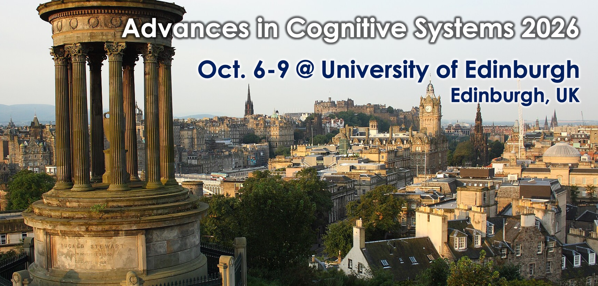

The Thirteenth Annual Conference on Advances in Cognitive Systems took place from Tuesday, October 6, to Friday, October 9, 2026, at the University of Edinburgh.
The ACS conference series aims to bring together researchers to advance the original goals of artificial intelligence: to explain cognition and learning in computational terms and to reproduce a broad range of intelligent behaviors and human abilities in computational artifacts.
The conference series welcomes many types of research, including demonstrations of new capabilities, empirical studies of implemented systems, and formal analyses of complex tasks. The term "cognitive" refers to any computational artifact that thinks or reasons, whether or not it works the same way as humans. Topics of interest include:
|
1050-1115am Morning coffee break 1130-1245pm Session 2 (O4-6): Planning and control Session chair: Chris MacLellan 1130-1155am: Mei Si: Plausibility Masks Executability Failures in LLM-Based Planning 1155am-1220pm: Glen Smith and Christopher MacLellan: Linguistic Hierarchical Task Networks for Environment-Agnostic Planning 1220-1245pm: David Menager and Pat Langley: Learning Skills and Affordances for Teleoreactive Control 1245-2pm Lunch provided in Atrium 2-315pm Session 3: Poster lightning talks Session chairs: Andrew Gordon and Jeff Aguilar Abhishek Jaiswal, Joan Ruiz Berenguer and Zoe Falomir: Capturing Human Perception of Level Difficulty in a Spatial Bridge Building Game using a Qualitative solver Ashok Goel, Jeanette Luu, Nicholas Alico, Shubham Puri, Bukhaar Mahamed and Spencer Rugaber: Standardization of Task-Method-Knowledge Representations for Automatic Verification of Agent Self-Models Daniel Weitekamp and Christopher J. MacLellan: SMTB: Fast Structure Mapping with Tight Bounds Deepayan Sanyal, Joel Michelson, Carla Cao, Adam Roddy and Maithilee Kunda: Plants as Inspiration for Novel AI Problem Formulations Gonzalo A. Aranda-Corral, Alan Bundy, Joaquín Borrego-Díaz, Pak Yin Chan and José Luis Iglesias Feria: Automated Grounding in FCA by means of LLMs Marjorie McShane, Jesse English, Sergei Nirenburg and Christian Arndt: Semantically Transparent Language Generation for Cognitive Robots Omid Madani: Interpretation Games Paola Rizzo, Hector Munoz-Avila and David Aha: Hierarchical Task Network planning in the Goal Lifecycle Rebecca von Engelhardt & Malte Luttermann: Predicting How People Update Beliefs: Comparison of Individual-, Subgroup-, & Population-Level Dynamic Bayesian Networks Robert Wray, Moritz Schmidt and Steven Jones: Developer-on-the-Loop: Engineering Cognitive Systems with Coding Agents Wangcheng Xu and Kenneth Forbus: A Neuro-Symbolic Visual Ensemble with VLM Guidance and Visual Routine Composition Yuesheng Xu and Hector Munoz-Avila: Curriculum-Guided Acquisition of Hierarchical Task Knowledge from LLM-Generated Experience (these posters are not presented at the conference, but papers are in proceedings) Jamie Macbeth, Boming Zhang, Nhan Trong Pham, Zishu Zhao, Ruixi Liang and Mark Roberts: Exploring Hierarchical Scripts with Story Generation Geoffrey Short, Rodolphe Gentili, James Reggia and Darsana Josyula: Toward Universal, Dynamic Goal Monitoring for Non-Omniscient Cognitive Agents 315-345pm Afternoon coffee break 345-435pm Session 4 (O7-8): Compositionality Session chair: Moritz Schmidt 345-410pm: Karthik Singaravadivelan and Pat Langley: A Unified Account of Concepts and Chunks 410-435pm: Tianyi Fu and Mohan Sridharan: Hierarchical Compositionality for An Assistive AI Agent 435-5pm Awards ceremony 5-630pm Drinks reception and poster session at venue Thursday ====== 830-930am Coffee + light breakfast 930-1045am Session 5 (O9-11): Meta-reasoning Session chair: Adam Amos-Binks 930-955am: Jeffrey Aguilar, Kevin Volkel, Rodney Metoyer and Adam Amos-Binks: A Computational Model of Anticipatory Thinking 955-1020am: James Kirk and Steven Jones: Using Metareasoning for Strategy Guidance during Troubleshooting 1020-1045am: Hector Munoz-Avila, David Aha and Paola Rizzo: Moral Rebel Agents: Decision-Making Under Conflicting Obligations 1045-1115am Morning coffee break 1115-1215pm Session 6 (Invited talk by Vaishak Belle, University of Edinburgh): The Future is Neuro-Symbolic: Where Has It Been and Where Is It Going? This talk explores the evolution and current state of neurosymbolic AI, an approach that integrates neural network capabilities with symbolic reasoning. We trace the historical context from early AI aspirations to modern implementations and successes, highlighting key paradigms, and other logical and semantical considerations. We argue against the “scaling is all you need” hypothesis, and point to persistent challenges in reliable symbolic reasoning with deep and large models. Then we conclude by suggesting that despite numerous implementation choices and the “broad church” nature of neuro-symbolic AI, these approaches offer the most promising path towards AI systems that combine pattern recognition with robust reasoning, particularly for applications requiring structured knowledge, explainability, and trustworthiness. Dr Vaishak Belle (he/him) is a Chancellor’s Fellow and Reader at the School of Informatics, University of Edinburgh. He is an Alan Turing Institute Faculty Fellow, a Royal Society University Research Fellow, and a member of the RSE (Royal Society of Edinburgh) Young Academy of Scotland. He is also Director of Research and Innovation at the Bayes Centre (40% of his time). He was previously at KU Leuven (Belgium), University of Toronto (Canada), Aachen University of Technology (Germany) and University of Trento (Italy). At the University of Edinburgh, he directs a research lab on artificial intelligence, specialising in the unification of logic and machine learning, with a recent emphasis on explainability and ethics. He has given research seminars at academic institutions such as MIT and Oxford, tutorials at AI conferences, and talks at venues such as Ars Electronica and the Samsung AI Forum. He has co-authored close to 150 peer-reviewed articles on AI, at venues such as IJCAI, UAI, AAAI, MLJ, AIJ, JAIR, AAMAS, and along with his co-authors, he has won the Microsoft best paper award at UAI, the Machine learning journal best student paper award at ECML-PKDD, and the Machine learning journal best student paper award at ILP. In 2014, he received a silver medal by the Kurt Goedel Society. He has served on the senior program committee/area chair of major AI conferences, co-chaired the ML track at KR, among others. As PI and CoI secured a grant income of close to 40 million pounds. He is CoI of the 16 million investment in enabling responsible AI in the UK, funded by the Arts and Humanities Research Council (AHRC) – the BRAID Programme. He is also CoI on the 20 million Quantum Advantage TurboCHarger (QATCH) programme by UKRI. He has consulted with major banks on explainable AI and its impact in financial institutions. 1215-220pm Lunch on your own (many nearby options) 220-335pm Session 7 (O12-13): Spatial reasoning Session chair: Zoe Falomir 220-245pm: Julius Monsen, Jakob Suchan and Mehul Bhatt: Anticipatory Commonsense with Moving Objects: An ASP-Based Framework for Predictive Reasoning with Interacting Trajectories 245pm-310pm: Martí Ejarque Galindo and Zoe Falomir Llansola: Integrating Qualitative Models for Reasoning about 3D perspectives and Object Rotations to solve the Purdue Spatial Visualization Test 310-340m Afternoon coffee break 340-430pm Session 8 (O15-16): Designing cognitive systems Session chair: Kyle Moore 340-405pm: John Laird and Robert Wray: Trust in AI Agents: Cognitive Capabilities and Architecture Analysis 405pm-430pm: Douglas Fisher, Kyle Moore and Jesse Roberts: State-Space Search and Transformer-Based AI Hybridization Recommended pre-dinner walk: Calton Hill, just 5min walk from dinner, with incredible views. 7-9pm Conference dinner at Howie’s, Waterloo Place 29 Waterloo Pl, Edinburgh EH1 3BQ The conference dinner is included as part of the main conference registration. Please enter your dinner selections HERE by Monday noon British Time! Friday ====== 9-10am Coffee + light breakfast 10-1030am Session 9A (Invited talk by Alan Bundy, University of Edinburgh): Critiquing the Cruise Crash using Conceptual Change Authors: Alan Bundy, G Aranda-Corral, Thomas Wong and Luis Gutiérrez-Jerez. The ABC System repairs faults in logical theories. Philip Koopman has described an incident in which an autonomous robotaxi dragged a pedestrian under the vehicle about 20 feet at 7.7 mph. Analysis of this incident suggests that the robotaxi perceived the pedestrian as three distinct objects and not as the same human. We introduce the principle of Continuity of Existence into the ABC system and use this to merge the three different pedestrian perceptions into one, thus enabling it to treat the pedestrian with respect. Alan Bundy is Professor of Automated Reasoning in the School of Informatics at the University of Edinburgh. His research interests include: the automation of mathematical reasoning, with applications to reasoning about the correctness of computer software and hardware; and the automatic construction, analysis and evolution of representations of knowledge. His research combines artificial intelligence with theoretical computer science and applies this to practical problems in the development and maintenance of computing systems. He is the author of over 300 publications and has held over 60 research grants. He is a fellow of several academic societies, including the Royal Society, the Royal Society of Edinburgh, the Royal Academy of Engineering and the Association for Computing Machinery. His awards include the IJCAI Research Excellence Award (2007), the CADE Herbrand Award (2007) and a CBE (2012). He was: Edinburgh's founding Head of Informatics (1998-2001); founding Convener of UKCRC (2000-05); and a Vice President and Trustee of the British Computer Society with special responsibility for the Academy of Computing (2010-12). He was also a member of: the Hewlett-Packard Research Board (1989-91); the ITEC Foresight Panel (1994-96); both the 2001 and 2008 Computer Science RAE panels (1999-2001, 2005-8); and the Scottish Science Advisory Council (2008-12). 1030-11am Session 9B (Roundtable discussion, chair Chris MacLellan): Cognitive Systems in the Evolving Landscape of AI 11-1130am Morning coffee break 1130-1245pm Session 10 (O17-19): Reasoning Session chair: Daniel Weitekamp 1130-1155am: Shinhaeng Lee, Christopher MacLellan and Daniel Weitekamp: Structure-Mapping-Guided Self-Explanation for Learning Mathematical Procedures 1155-1220pm: Jonathan W. Morris, Khin Saw Yone and Leilani H. Gilpin: TRRAIL and Error: Evaluating Multi-Agent NeSy LLMs for Logic, Law, and Medical Question Answering 1220-1245pm: Andrew Gordon: Using Large Language Models to Translate English Questions into Abductive Reasoning Problems 1245-145pm Lunch provided in Atrium 145-235pm Session 11A (O20-21): Beliefs and traits Session chair: Malte Luttermann 145-210pm: Ashok Goel and Qiaosi Wang: Is Development of Mutual Theory of Mind Essential for Developing Human-Level AI? 210-235pm: Rebecca von Engelhardt and Malte Luttermann: Capturing Inter-Individual Differences in Cognitive Processes via Hierarchical Clustering in Dynamic Bayesian Networks 235-255pm Afternoon coffee break 255-345pm Session 11B (O22): Beliefs and traits + Session 7B (O14): Spatial reasoning Session chair: Rebecca von Engelhardt 255-320pm: Priyanka Sinha and Sugam Pandey: Knowing What You Know: A Trait Theory of Reviewer Value in Human-AI Cognitive Systems 320-345: Jiahong Zheng and Kenneth D. Forbus: Evidence-Maintained Construction of Geometry Diagram Representations 345-4pm Closing remarks